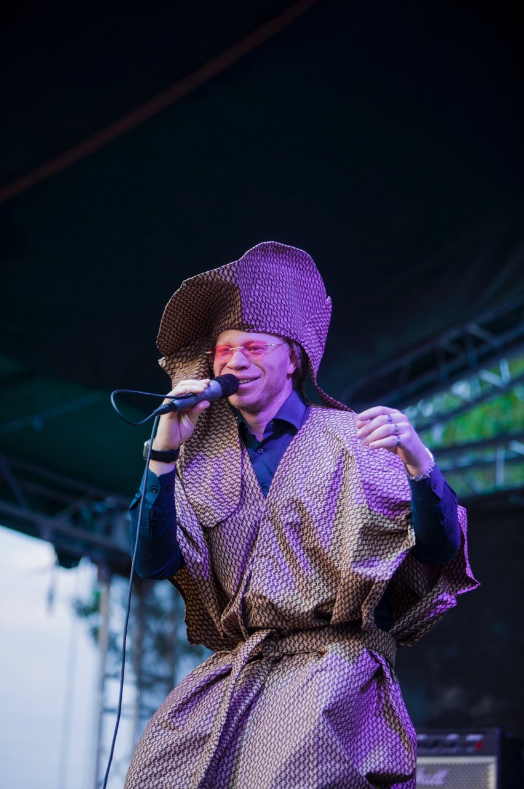
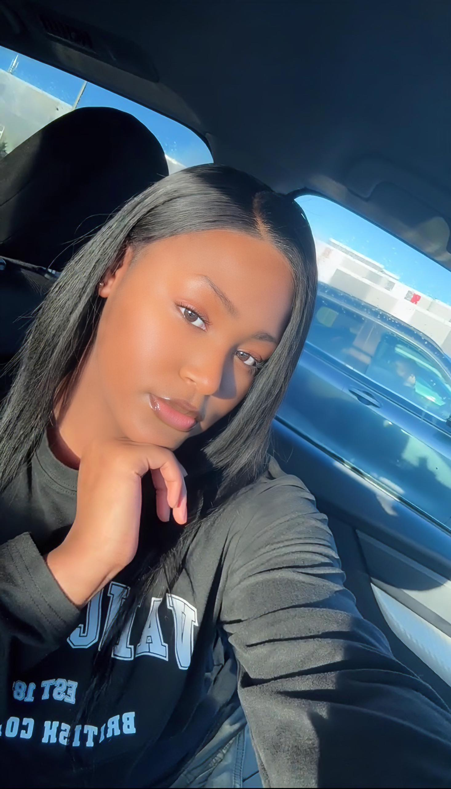

La marque fashion king and Queen est celle des rois et reines, la considération de l'un et l'autre dans un amour vrai vous pousse à la porter pour plus de respect dans votre relation. Si vous vous aimez bien cette marque est votre symbole qui amène chacun à jouer son rôle pour que votre amour illumine les autres.
Chicco MWENGE
Poète, Slameur, Mc des plusieurs festivalsLa marque Fashion King and Queen est vraiment exceptionnelle. Elle se démarque des autres marques par sa qualité originale et naturelle. Rien n'est forcé avec cette marque. Nous encourageons l'initiateur de la marque à continuer d'inspirer des générations en générations car personnellement je sens fier de porte cette marque royale.
Bénédicte LUENDO
Artiste musicienneLa marque fashion king est non seulement une marque mais une raison d’aimer et d’apprécier la ville de Goma. Quand on met un t-shirt Fashion king on se sent fier de ses origines et de sa ville. Force à vous.
Elisha ABUMBA
Artiste photographe et vidéasteJe trouves la marque fashion King and Queen assez interessante déjà c’est un style unique qui nous met en valeur et moi en tant que mannequin je choisi cette marque pour mes styles casual et street c’est cool 😎
Lievain KENA
Mannequin
Cette marque est magnifique dès le premier regard. Quand j'ai porté cette marque pour la première fois, je me suis senti comme une reine. Oui, comme son nom l’indique , j'ai ressenti une véritable sensation de royauté. Je dirais donc que c'est une marque splendide qui inspire confiance en soi.
Deby LUBANGI
ClienteVous êtes la quintessence de l'élégance et de la créativité, merci pour votre contribution inestimable à l'univers de la mode. Je suis honoré de pouvoir porter vos créations. Je suis fière de vous, merci pour tout.
Christelle KASONDWA
Jeune étudiante
Ce que j'ai vraiment apprécié chez Fashion Queen, c'est la qualité de leurs vêtements. Ce n'est pas seulement le design qui est remarquable, mais aussi la très bonne qualité des vêtements. Ouais, voilà donc pourquoi c’est plus qu’une marque de vêtements.